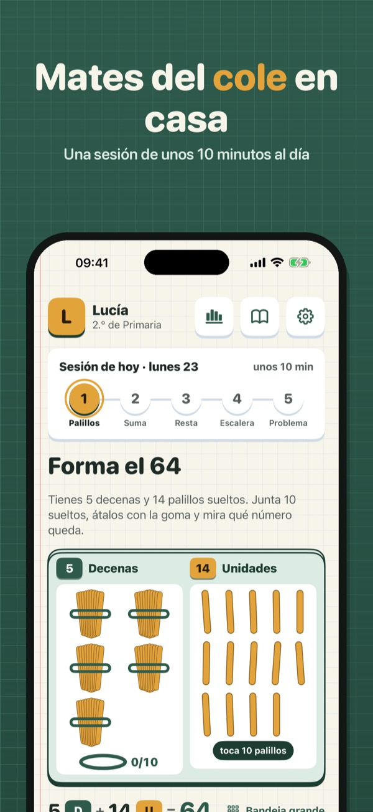
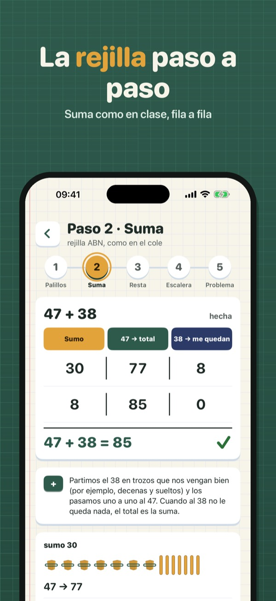
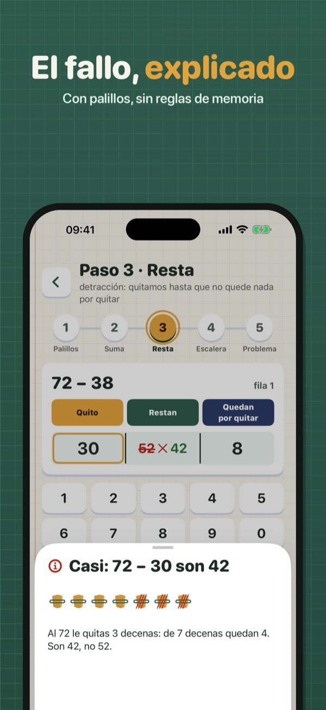
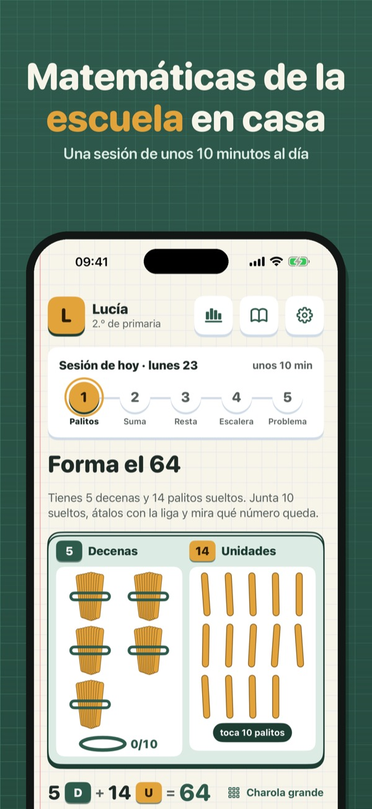
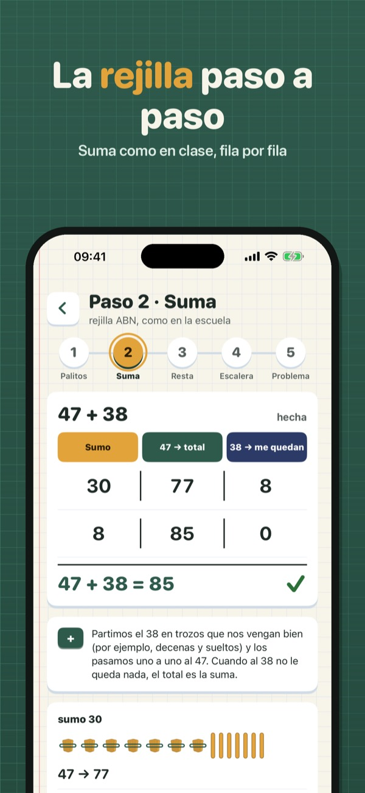
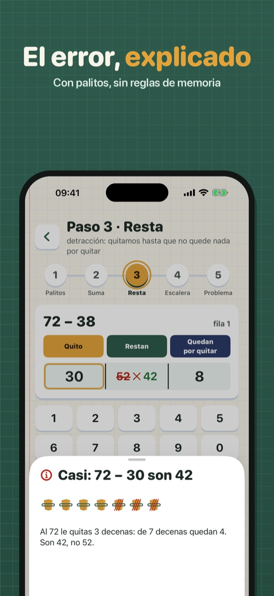

España
Palillos y rejilla paso a paso
La rejilla del cole en casa: palillos, decenas, suma, resta y escalera paso a paso, con cada fallo explicado. Unos 10 minutos al día.



Palote lleva a casa las mates que tu peque hace en el cole con el método ABN. Cada día prepara una sesión de unos 10 minutos según su curso, de Infantil (3 años) a 6.º de Primaria: formar un número con palillos y decenas, una suma con rejilla, una resta por detracción, la misma resta con la escalera y un problema.
Si una casilla está mal, Palote no da la respuesta sin más: marca la casilla, enseña el número correcto y explica por qué con palillos («al 72 le quitas 3 decenas: quedan 4 decenas, son 42, no 52»).
Pensada para usar juntos: las compras, los ajustes y los enlaces están detrás de una zona de adultos (mantener pulsados dos puntos y responder una multiplicación escrita en letras).
Sin cuentas, sin anuncios y sin estadísticas: los nombres y el progreso se quedan en el dispositivo.
Se puede usar sin pagar: la sesión diaria de 5 pasos, la bandeja de palillos, 1 peque, 7 días de progreso y 2 temas de la guía. Palote Plus es un pago único (no es una suscripción) que añade rondas extra cada día, multiplicar y dividir, hasta 5 peques, el progreso de todo el trimestre y la guía completa. Sirve para «En familia» de Apple.
Palote es una app independiente. No está relacionada con ningún colegio, editorial ni con los autores del método ABN. Si la ficha del cole lo hace distinto, sigue la ficha.
Condiciones de uso (EULA): https://www.apple.com/legal/internet-services/itunes/dev/stdeula/
Privacidad: https://apps.baytech.nl/palote-es/
Latinoamérica
Palitos y rejilla paso a paso
La rejilla de la escuela en casa: palitos, decenas, suma, resta y escalera paso a paso, con cada error explicado. Unos 10 minutos al día.



Palote lleva a casa las matemáticas que tu hijo o hija hace en la escuela con el método ABN. Cada día prepara una sesión de unos 10 minutos según su grado, de preescolar (3 años) a 6.º de primaria: formar un número con palitos y decenas, una suma con rejilla, una resta por detracción, la misma resta con la escalera y un problema.
Si una casilla está mal, Palote no da la respuesta sin más: marca la casilla, enseña el número correcto y explica por qué con palitos («al 72 le quitas 3 decenas: quedan 4 decenas, son 42, no 52»).
Pensada para usar juntos: las compras, los ajustes y los enlaces están detrás de una zona de adultos (mantener presionados dos puntos y responder una multiplicación escrita en letras).
Sin cuentas, sin anuncios y sin estadísticas: los nombres y el progreso se quedan en el dispositivo.
Se puede usar sin pagar: la sesión diaria de 5 pasos, la charola de palitos, 1 niño, 7 días de progreso y 2 temas de la guía. Palote Plus es un pago único (no es una suscripción) que añade rondas extra cada día, multiplicar y dividir, hasta 5 niños, el progreso de todo el trimestre y la guía completa. Funciona con «En familia» de Apple.
Palote es una app independiente. No está relacionada con ninguna escuela, editorial ni con los autores del método ABN. Si la hoja de la escuela lo hace distinto, sigue la hoja.
Términos de uso (EULA): https://www.apple.com/legal/internet-services/itunes/dev/stdeula/
Privacidad: https://apps.baytech.nl/palote-es/